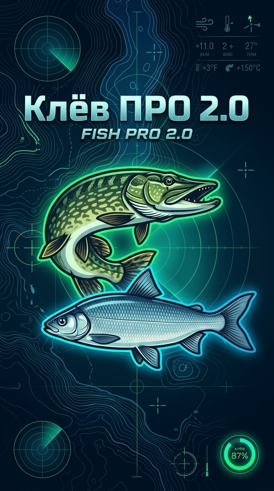

Клёв ПРО 2.0 • Радар клёва и Атлас ихтиофауны РФ
Волжско-Каспийский бассейн
🟢 Онлайн
📍 Москва
🆔 Профиль
🌊 Расчёт термического и ледового режима...
📍
Карта
🌦️
Погода
🐟
Рыбы
🎣
Прогноз
👥
Круг
👑
Админ
⋮
Ещё
💬
Чаты экипажей
📓
Журнал уловов
📅
Календарь биоритмов
👑
Супер-Админ и БД
🔐
Вход, Пароль и Мой ID
⚙️
Настройки профиля
✕
Закрыть